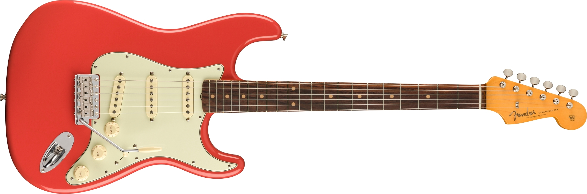
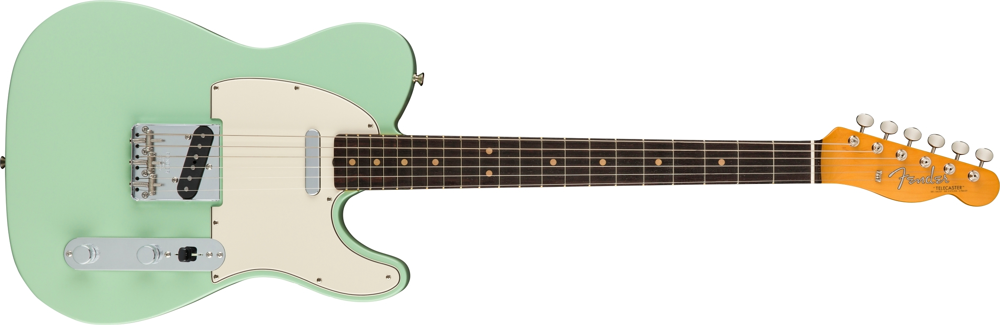
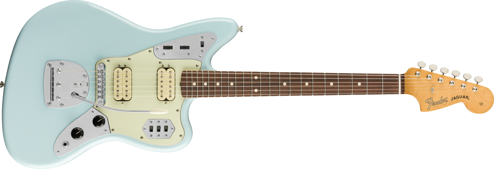

拭き漆ギター制作
拭き漆ギター制作
制作に向けた準備
高校から始めた楽器を1から作ろうと思ったきっかけは，ギターは欲しいが新品でギターを買うのは非常に高価であること，現在在籍している短期大学に木工関連の設備が整備されていたから．
道具とか揃っちゃってるし，あっさり作れちゃうんじゃない？？，という安易もいいところではないかという考えで制作することを決めました．
まず初めに，どのようなギターを作るかを決めることにしました．
制作する楽器・種類の設定
どんなギターを作ろうか検討するため，インターネット等でギターの種類について調べて流ことにしました．アコースティックギターとエレキギターの大まかな分類は分かっていたものの，細かい種類については
ストラトキャスタータイプ 引用:AMERICAN VINTAGE II 1961 STRATOCASTER®
テレキャスタータイプ 引用:AMERICAN VINTAGE II 1963 TELECASTER®
ジャガータイプ 引用:VINTERA® '60S JAGUAR® MODIFIED HH
上記の他にも，ジャズマスタータイプや，フライングVタイプ，モッキンバードタイプといった変形ギターなどがあることを知りました．
さらに調べていく中で．エスクワイヤーというエレキギターの存在を知りました．上記で紹介したテレキャスタータイプのフロントピックアップ（エレキギターの音を拾う部品．ここではネック側についている方を指す）が付いていないもの，といえば分かりやすいかもしれません．
シンプルなデザインであることや，部品数や加工の手間が他のエレキギターよりも少ないのでは？と考え，エスクワイヤータイプのエレキギターを制作することに決めました．
必要な材料，部品の検討・購入
制作するものが決まったので，次はどんなものが必要かを調べて，制作に備えることにしました．
インターネットで，エレキギターを制作する上で必要なものを実際にギターを自作した方のサイト等を参考にまとめました．
- ボディとなる木材
- ネック
- コントロールパネル配線材）
- スイッチ
- ネックプレート
- 配線材
- 塗装に使う塗料
- 弦
上記があればなんとか作れるだろうと思い，少ないバイト代を叩いて材料を購入しました．今回は初めての制作で不慣れのため，制作難易度の高いネックの制作は諦め，既製品を購入することにしました．
①ボディに用いる木材は，楽器用の木材を専門に取り扱う アイモクのサイトから購入しました．幅広い種類の木材を取り扱っておりどの木材にするか迷ってしまいます．今回は一番安かったアルダーという種類の木材の2 P（木材同士を接着して一枚の板にした集成材，一枚板よりお値段が安くなる）を選びました．送料込みで7〜8000円ほどです．
②ネックとコントロールノブ，配線材などはオークションやamazonで購入しました．ここで，届いた部品の基盤が破損しているというオークションの洗礼を受けます．しっかりとしたものを作りたい方は少々値段が張っても正規品を購入することをお勧めします．
加工に必要な道具や機械を調べる
材料や工程を調べていくに伴い，加工に必要な道具も少しずつ判明してきました．幸い私が在籍する学校には先述したように，木工関連の機械や道具はあらかた揃っているため，自分から用意する必要はありませんでした．学校にあるどの機械，道具を使えば効率よく制作できるかを考え，おおよそ使用するであろうものに目星をつけました．

スコヤです．直角を出したり，線引きする際に重宝します．

棒ヤスリです．平らな面と湾曲した面の二つの顔を持ちあわせているため，様々な場所で使います．

トリマーです．面取りや，ピックアップを入れる溝を掘る際などに使います．これがあるとかなり楽に作業できると思います．
初めて一から材料や部品について調べ，購入するという本制作への準備段階の一連の流れではありましたが，初めてでもそこまで難しいことや面倒なことはなかったと感じています．逆に，より一層作るぞ！，という意欲が増し，気が引き締まる思いです．
↓次回から，本制作の工程に移ります．↓